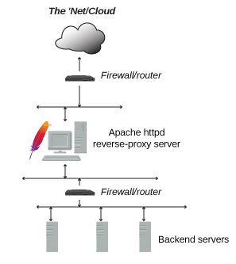

Introducción a Docker y despliegue de aplicaciones Symfony
Brais Arias Rio
(profesor en prácticas)
Liceo La Paz
https://braisarias.github.io/liceointernship-deploy-docker/

Quien soy?
Ingeniero informático
Consultor de software libre / SysAdmin en iCarto
Oficina de Software Libre de la AMTEGA (Xunta)
Mancomún Podcast
Asociacionismo: GPUL - KDE España
(Ahora) también estudio Русский язык (ruso)
Qué es Docker?
- Sistema de virtualización
- Basado en contenedores
- Software libre (Apachev2)
- https://www.docker.com/
Usos de Docker
- Automatización de despliegues
- Aislamiento y seguridad de aplicaciones
- Entorno de pruebas
Contenedores vs Máquinas virtuales
Comparing Virtual Machines and Containers. Source: https://medium.com/@faizanbashir/docker-containers-101-e47f594a0edContenedores vs Máquinas virtuales
 Memory consumption of VMs vs Dockers. Source:
https://devopedia.org/docker
Memory consumption of VMs vs Dockers. Source:
https://devopedia.org/docker
Componentes de Docker
- Docker Engine: Núcleo de Docker, gestiona la creación, ejecución, etc de loc contenedores
- Docker Hub: Repositorio oficial de imágenes de Docker
- Docker Compose: Herramienta para definir aplicaciones/sistemas compuestos de
contenedores
- docker-compose.yml: ejemplo
Qué se maneja con Docker?
- Imágenes: plantilla estática para creación de contenedores
- Dockerfile: ejemplo
- Contenedores: espacios aislados para ejecutar y lanzar aplicaciones
- Volúmenes: espacios para mantener información más allá de la vida de un contenedor
- Red y mapeo de puertos: para poder acceder a servicios de dentro del contenedor
Comandos básicos de Docker
- docker start <contenedor>: Inicia un contenedor
- docker run <image> <comando>: Inicia un nuevo contenedor de la imagen image y lanza en el un comando
- docker pull <image>: Obtiene del repositorio la imagen
- docker ps [-a]: Lista los contenedores
- docker rm <contenedor>: Elimina el contenedor
- docker port <contenedor>: Lista el mapeo de puertos del contenedor
- docker stop <nombre>: Para un contenedor
Despliegue de Aplicación Symfony con Docker
De forma general para desplegar aplicaciones Symfony:
- Proyecto Symfony funcionando
- Creamos/editamos fichero de docker-compose
- Ejecutamos docker-compose up
- Configuración de Apache como proxy inverso
Más información aquí
Taller práctico
Como vamos a usar una máquina Debian 10 para nuestro despliegue debemos realizar algunas cosas a mayores
Vamos a seguir la guía de instalación de Symfony
Instalación de PHP 8 en Debian
Debemos tener PHP versión 8
Comprobar versión de PHP: php --version
Para instalar PHP versión 8 en Debian 10 seguimos esta guía
Instalación de Composer
Debemos tener instalado el Composer correspondiente a la versión PHP
Para instalar Composer en Debian 10 seguimos esta guía
A mayores no está demás hacer esto:
sudo ln -s
/usr/local/bin/composer
/bin/composer
Instalación de Symfony CLI
Symfony CLI (Command Line Interface) se utiliza para poder lanzar los comandos de Symfony
Para instalar Symfony-CLI seguimos esta guía
Para comprobar que está correctamente instalado podemos crear un proyecto nuevo:
symfony new my_project
Configurar usuario de Git
Al intentar crear un proyecto nuevo podemos ver que nos protesta al no tener git configurado:
git config --global user.name "Your Name"
git config --global user.email "youremail@yourdomain.com"
¡OJO! ¿Nos hemos olvidado de algo?
En clase nos falla la aplicación Symfony porque no hemos instalado algunos de los módulos extra que nos recomienda Symfony:
Podemos instalar estos módulos de PHP de esta forma:
sudo apt install -y php8.0-simplexml php8.0-tokenizer php8.0-iconv
php8.0-ctype
Proyecto Symfony
Usamos el proyecto que queramos. En este ejemplo:
https://github.com/braisarias/my-luckynumber-symfony
Fichero de configuración
En el docker-compose.yml (ejemplo) se define que necesita nuestra aplicación, por ejemplo:
- Apache
- PHP
- Symfony
- MySQL / MariaDB / PostgreSQL
Configuramos con symfony-docker
Antes de lanzar nuestra aplicación con Docker, la vamos a configurar y ejecutar según nos dice la documentación
Construír contenedor y ejecutarlo
- Como último paso ejecutamos el contenedor
- Con el comando docker-compose up -d se construye(n) y se lanza(n) el/los contenedor(es) necesarios en segundo plano
¡Ya está!
Ya está desplegada nuestra aplicación,
podemos probarla accediendo a la URL:
http://localhost/
Proxy inverso
Si tenemos varias aplicaciones en nuestro servidor seguramente necesitaremos un Proxy Inverso

Implementación de Proxy Inverso. Source: https://httpd.apache.org/docs/2.4/howto/reverse_proxy.htmlContinuar con Docker
-
edX:
- Programa formativo introductorio a DevOps con posibilidad de certificado
- Curso Introducción a tecnologías de infraestructura cloud
Continuar con Docker
Continuar con Docker
Muchas gracias
Realizar encuesta de feedback
Contáctame en LinkedIn
También me puedes escribir por correo a: braisarias en disroot punto org
Introducción a Docker y despliegue de aplicaciones Symfony
Brais Arias Rio
(profesor en prácticas)
Liceo La Paz
https://braisarias.github.io/liceointernship-deploy-docker/